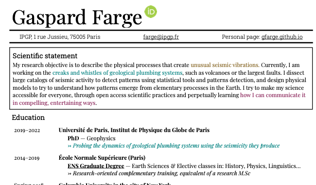

My CV
Last updated: 15 June 2021
I am Gaspard, and I am a PhD student in the Institut de Physique du Globe de Paris (IPGP) of Université de Paris (UP). I work with Claude Jaupart and Nikolaï Shapiro in the Geological fluid dynamics team, studying the seismic sounds of the plumbing systems that run through the Earth's crust. I spend a lot of my free and working time on making visualisations and sonifications of scientific data. Some of this work will be featured here, alongside my research. For now you can find it on vimeo! I am also a teaching assistant in the Earth Sciences Bachelor and Masters degree of IPGP and UP, in Thermodynamics, Mathematics, and Python for Data Analysis in the Earth sciences. On this website, you will soon find material I used in the classroom.

Last updated: 15 June 2021